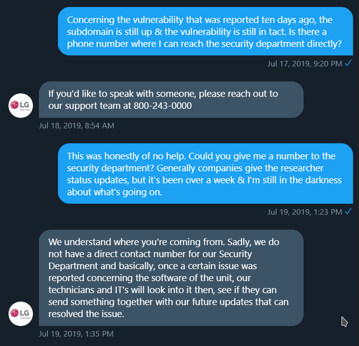
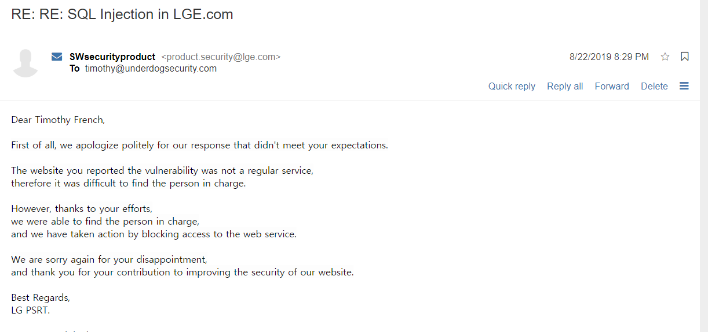

Vulnerability Disclosure & LG Electronics
0x01 Discovery⌗
Utilizing the EDD developed by @83LeeJ of CTRLBOX an initial discovery was made after we found data leaked from the LG Claims Office. Upon discussing this with fellow Underdog Security researcher Dominik Penner (@zer0pwn) and realizing that they had a vulnerability disclosure program, the decision was made to search lge.com for more issues. The first step we took was using spyse.py to generate a list of subdomains and map out the attack surface.
After this step we began picking through each one of the subdomains, coming across a multitude of concerning discoveries. For example, open registration on Jira instances along with partner registration which had no verification process, ultimately leading to the leakage of each partner’s quarterly revenue. Toward the bottom of the list we found an interesting subdomain, wap.lge.com.
The frontend of the webpage asked for a SSO Authentication code, which obviously we did not have.
However, this obstacle meant very little considering directly below the auth code prompt was the option to have one forwarded to you. Clicking this redirected us to wap.lge.com/get_authcode.asp, and it is here where you are presented with the option to enter your email address & have an authentication code directed to your email.
Information passed through this form was passed via POST request and if the email supplied was valid, then you’d recieve the code in your inbox. This is what the POST request looked like:
POST /email_ok2_yk.asp
Host: wap.lge.com
Content-Type: application/x-www-form-urlencoded
Content-Length: 28
Connection: keep-alive
Referer: http://wap.lge.com/get_authcode.asp
email1=udd&domain=@lge.com
After capturing the POST Request we proceeded to tamper with the parameters, which resulted in the following response from inserting a single-quote in the email1 parameter.
It was at this point that I became jittery. A Microsoft SQL Server error responding to our attempt to trigger a vulnerability. This is very promising. Let’s see what we can do with it :)
0x03 Exploitation⌗
The next step after discovering this potentially catastrophic error was to mess around with the parameter that successfully triggered the message. Considering the remainder of the text was the result of an encoding problem, we identified the encoding used by the service was EUC-KR. To increase readability, we changed the encoding being used by our browsers to EUC-KR.
Once this was fixed, we went about crafting our payloads. We shortly discovered that the server was actually stripping spaces (%20) which was breaking our queries. In the end, we figured out we could use an encoded + (%2B) to bypass this.
Our request looked like this:
email1=asd@asd.com'+(SELECT 1 WHERE 1129=@@version)+'
&domain=@lge.com
Becoming:
email1=asd%40asd.com%27%2B%28SELECT%201%20WHERE%201129%3D%40%40version%29%2B%2
&domain=%40lge.com
The result of this query put a smile on our faces.
Database:⌗
Query used:⌗
'+(SELECT 1 WHERE 1129=db_name())+'
User:⌗
During the initial fingerprinting of the SQL server, we discovered that it was using Transact-SQL. By using suser_name() we could dump the current user. It displayed “sa” otherwise known as “system administrator”. This is bad because system administrator has the appropriate user privileges to execute commands from xp_cmdshell. What saves them is that since SQL Server 2005 xp_cmdshell has been disabled by default & stacked queries is required to enable it. We weren’t comfortable attempting to escalate to code execution without first getting in touch with LG.
Query used:⌗
'+(SELECT 1 WHERE 1129=suser_name())+'
0x03 Reporting⌗
After we verified the impact & formulated our report, we emailed it to the LG Security team & contacted them on Twitter. The initial response from them was thankful.
Response to the report through email:
And so we waited… fast forward ten days later.
0x04 Problems in paradise.⌗
We requested to be kept updated to the status of patches, which they agreed to do such.
After being ignored for so long we reached back out to the LG Security team requesting an update in which we were ignored. At this point an email was sent to them quoting their security policy & reaching back out to them over Twitter in attempts to stir the water a bit to get things moving along.

This was the response we got over email:
Okay, this is getting ridiculous. After a few more tries we reached out to Pogo over at databreaches.net to see if there was any way she could speed the process up. She was told the security team would be in Vegas for a while so there would be a period of time where they were unavailable. This would be fine… if they would have even responded to her. So, we continued to wait.
Finally, deciding enough was enough we did the one sure fire thing to get them kicked into high gear and to start taking this seriously. We brought up full disclosure:
Finally a couple of days after this email was sent the vulnerable sub-domain had a new front page stating it was undergoing maintenance. Then the day after that the subdomain was taken down and I received this email:

Great, thanks. That’s still not a good enough answer as to why you left a critical vulnerability up and unaddressed for nearly two months, especially when the reporters forwarded you with more then enough information to fully replicate the exploit + information on exactly how to fix it.
0x05 Conclusion⌗
Recently there has been a lot of talk about “responsible disclosure.” Here we have an example where a company with a responsible disclosure gateway is being informed of a critical vulnerability on a service used by partners and staff. As you can tell, upon obtaining the report with more than enough credible information to replicate, there was no evidence they were taking this seriously whatsoever.
This vulnerability had the potential to be escalated to code execution, and yet the company took their sweet time addressing the problem. Full disclosure likely would have expedited this process immediately.
So the question you have to ask: is responsible disclosure always the right thing to do? Typically, yes. However, what if something affecting millions is left in the wild unaddressed for any period of a time going past a month, leaving staff and consumers at risk?
Timeline:⌗
- Discovery - 7/7/2019
- Reported - 7/7/2019
- Response from company 7/8/2019
- First request for follow up - 7/13/19
- Second request for follow up - 7/19/19
- Scripted response 7/22/19
- Reached out to Pogo - 8/6/19
- Made LG aware we may go full-disclosure - 8/16/19
- Vulnerable domain updated with an index that informs users it’s being tested 8/20/19
- Vulnerable domain takendown - 8/21/19
- Disclosed - 9/30/19